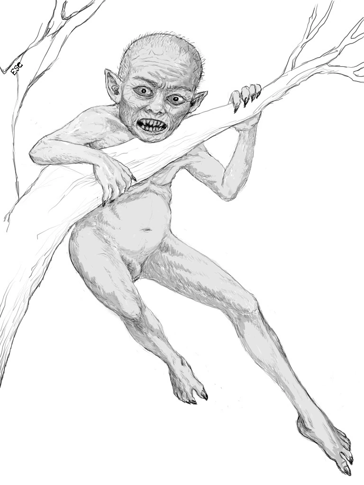

Tiyanak


Overview: The Tiyanak is a creature from Philippine folklore that disguises itself as a helpless infant to lure unsuspecting travelers. Once picked up, the baby transforms into a monster and attacks its victim.
P hysical Description
- Initially appears as a crying baby in the wilderness
- Transforms into a small, monstrous creature with fangs and claws
- Some versions depict it as a dwarf-like demon or goblin
Abilities
- Mimics the cries of an infant to lure humans
- Quick and vicious in its monstrous form
- Can disappear into the jungle quickly after attacking
Weaknesses
- Prayers and holy objects are believed to repel or weaken it
- Some legends say throwing a piece of clothing worn backwards confuses the Tiyanak
- Religious rituals can drive the creature away
Cultural Significance
The Tiyanak is one of the more horrifying creatures in Filipino mythology, believed to be the spirit of a child who died before baptism or was aborted. Its tale is often used to warn travelers about going into the woods alone and also touches on cultural beliefs about the afterlife and morality.